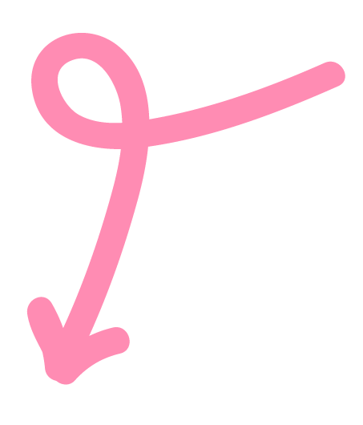

Public City Jazz
De opdracht
De stad Rotterdam wil meer aandacht voor instrumentale jazz bij een jonger publiek via het gratis event Public City Jazz met aanstormend talent zoals Sirocco.
Mijn opdracht: een responsive one-page website ontwerpen die aansluit bij de huisstijl van Rotterdam, maar met vrijheid om deze helemaal te herinterpreteren zolang het past bij mijn gevoel voor nachtelijke jazz-vibes en jongerenstijl.
Gebaseerd op aangeleverde content zoals acts, quotes, data en afbeeldingen, met focus op inhoud-gericht vormgeven.
Informatie
Leerjaar: 2
Periode: November 2025
Duur: 4 weken
Programma's: Figma
Focus: Visual Design, UI Design
Het resultaat
Het eindresultaat is een responsive one-page website. Deze is volledig afgestemd op mobiel, tablet en desktop.
Ik begon met het idee van klassieke jazz uit oude cafés met een swingerig gevoel. De playlist veranderde dat beeld volledig. Ik ontdekte moderne jazz die uit de lijn breekt en soms net buiten de toon valt. Bold typografie die vervormt en rekt paste perfect bij die dynamiek. Het volume schiet van zacht naar hard. Het gevoel werd drukker en speelser. Toch bleef het stedelijk met een nachtleven-sfeer. Donker en licht spelen met elkaar in een urban nightlife-setting.
Met scheve overlappende letters, paars-gele contrasten en dynamische vormen trok ik jong publiek aan. Acts zoals Sirocco, quotes en event-details geven een levendig voorproefje van de energie in LantaarnVenster.